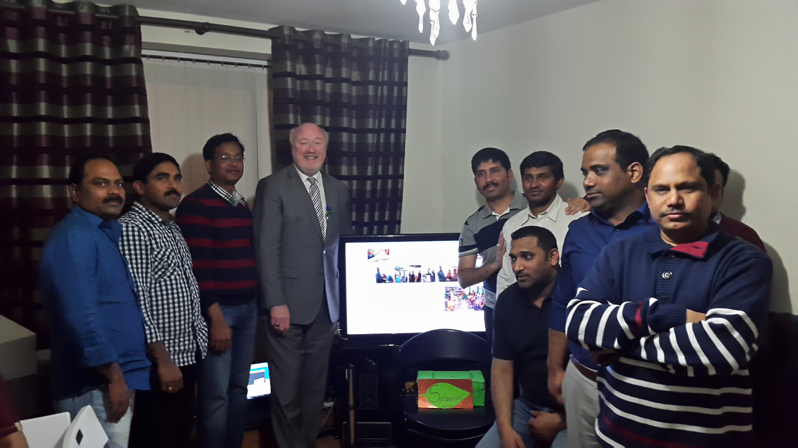
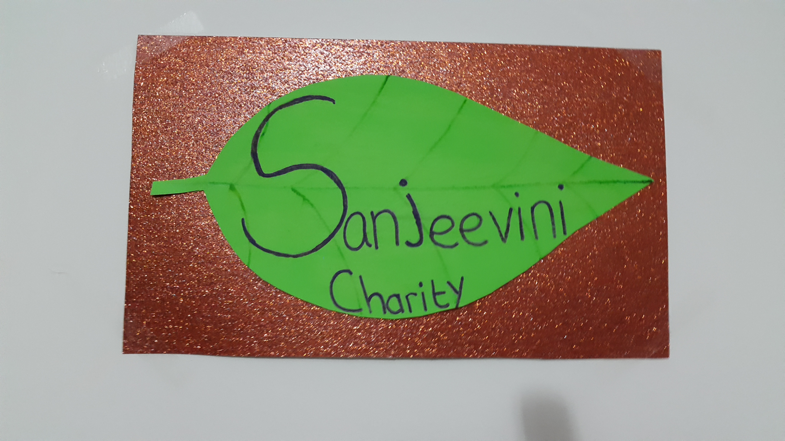

Website Launch on May 9th 2015
Our new website [www.SanjeeviniCharity.info] has been launched on 9th May 2015 in Ireland, organised by Bhava narayana Mada on his 40th birthday.We are very Thankful to Dublin Mid West TD Mr.Derek Keating who has officially launched our website in Ireland.



Funds raised from this event will be used on Medical Cards that will be distributed to poor aged and disabled people.

PS: special THANKS to Bhava narayana Mada and his friends & family in Ireland who have donated and supported this charity.